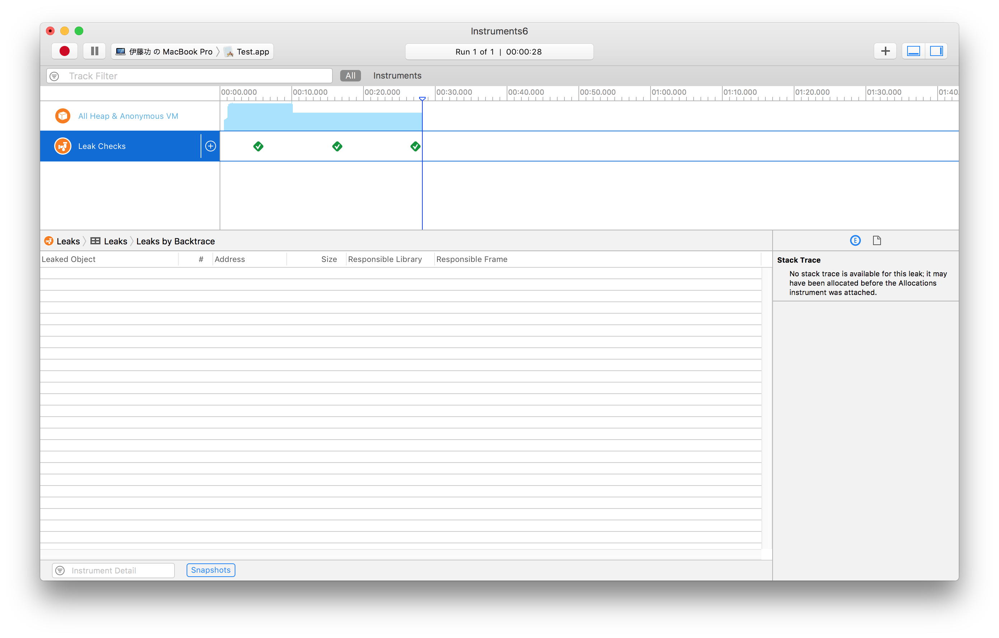
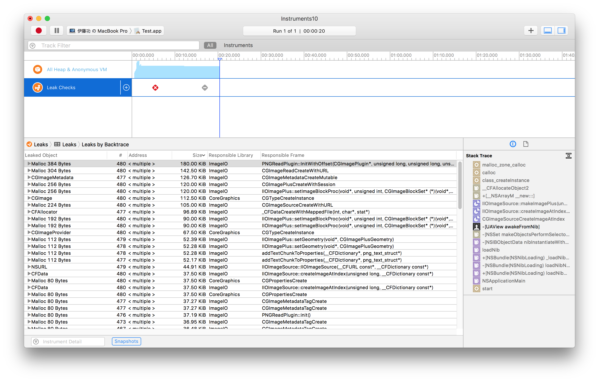
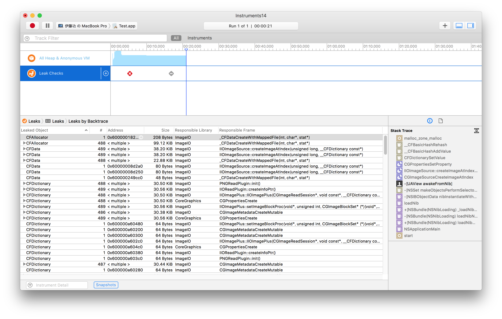

CoreGraphicsのメモリ管理
Core Foundationの一種であるCore Graphicsオブジェクトは獲得したオブジェクトが不要になったとき自前で解放しなくてはならない。
次の例は、pngファイルをCore Graphicsオブジェクトに読み込み、ビューに表示するプログラムである。
メモリの解放の効果をわかりやすく見せるためにループの中でオブジェクトの取得処理を500回繰り返している。メモリの解放を適切に行うケースと、行わないケースについて、それぞれ profileによりメモリ・リークの測定を行い、結果を検証してみた。行わないケースでは巨大なメモリ・リークが発生することがわかる。
メモリの解放を適切に行なうケース
オブジェクトをを取得する処理は二つのステップからなる。最初に、CGImageSourceCreateWithURLメソッドでCGImageSourceRefオブジェクトを取得し、次に、CGImageSourceCreateImageAtIndexメソッドでCGImageRefオブジェクトを取得し、プロパティに設定している。
最初に取得したCGImageSourceRefオブジェクトは、保持する必要のない一時オブジェクトなので、使用後はメモリを解放する必要がある。また、CGImageRefオブジェクトを保持するプロパティも、新しいオブジェクトを取得して代入する場合は、それまで保持していたオブジェクトを解放する必要がある。
オブジェクトの解放は、CFReleaseメソッドにより行う。実際に行っているのは retainカウントのデクリメントで、ARC以前のCocoaオブジジェクトのメモリ管理方式と同等の仕組みとなっている。
[補足] CGImageRelease と CFRelease は同じなのでどちらを使っても良い。

メモリの解放を適切に行わないケース（1）
CGImageSourceRefオブジェクトを解放しない

メモリの解放を適切に行わないケース（2）
CGImageRefオブジェクトを解放しない
